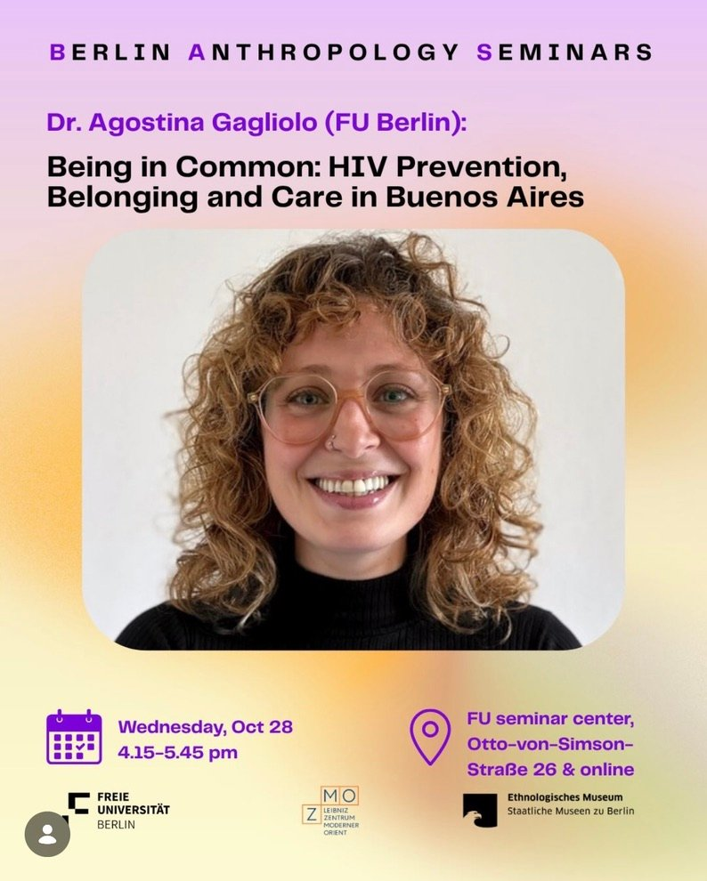

Being in Common at the Berlin Anthropology Seminars


Agostina Gagliolo presents her ethnographic research on PrEP in Buenos Aires at the Berlin Anthropology Seminars, hosted by the Institute for Social and Cultural Anthropology at Freie Universität Berlin together with the Leibniz-Zentrum Moderner Orient and the Ethnologisches Museum.
Drawing on fieldwork at an LGBTQ+ civil association and Combination Prevention Center, the talk follows how PrEP takes part in the making of what a group of gay men describe as a collectively inhabited environment, reshaping possibilities of belonging and ways of caring for the self and others. It also reflects on what the closure of the association in May 2025 reveals about sustaining HIV prevention when community-based spaces are dismantled.